The feel
Victorian Gothic takes the horror story out of the castle and into the modern city. In the early Victorian period Charles Dickens and others carried Gothic motifs, the innocent abandoned in a threatening place and the stranger with secrets to hide, into contemporary Britain, and slums with dark, labyrinthine streets replaced ivy-clad castles and catacombs as the settings for terror.1 Coal smoke hung over London, and its fog-smudged skyline became part of the city's identity.2 In this kind of story greyness, twilight and fog are more than local colour: they are its pervading metaphor.3
It works by suggestion. Ann Radcliffe argued that terror only hints at horrible things, while horror that shows them too plainly "freezes and nearly annihilates" the reader's senses.4 Thomas Grip of Frictional Games puts it in game terms: good horror often comes from claustrophobic spaces and thrives on low visibility.5 Underneath sits the fear that made Jekyll and Hyde so disturbing in the late 1880s, that a criminal could lurk behind a respectable public face.1
- gas-lit
- soot-black
- overdressed
- damp
- cast-iron
- feverish
Where it comes from
Early Gothic novels such as Horace Walpole's The Castle of Otranto (1764) were set in crumbling castles and torch-lit monasteries.1 In 1807 Frederick Winsor gave London its first public display of gas lighting, on Pall Mall, and by 1842 most of the city's main streets were lit.6 From the 1830s, cheap weekly "penny bloods", renamed penny dreadfuls in the 1860s, sold sensational, illustrated fiction to working-class readers, and Sweeney Todd first appeared in one of them, The String of Pearls, in 1846.7 Gustave Doré's wood-engraved illustrations for London: A Pilgrimage (1872), written with Blanchard Jerrold, gave Victorian London a striking, exaggerated image,8 and the fin de siècle added Jekyll and Hyde (1886), The Picture of Dorian Gray (1891) and Dracula (1897).1 In games, Bloodborne (2015) invokes a British Victorian setting,9 an era Hidetaka Miyazaki chose first for its combat, because it brought guns into the game without turning it into a shooter.10
Core elements
Labyrinthine city streets
Gothic fiction strands its characters somewhere strange and threatening, often a prison, and that place can be a decaying mansion just down the road.4 Victorian Gothic makes it the city: slums with dark, labyrinthine streets and seedy areas of vice took over from castles and catacombs.1 In Bloodborne the few civilians not out for your blood hide behind locked doors and curtained windows, while torch-bearing men roam the streets in groups.11
Coal smoke and yellow fog
Before cars, coal fires gave London smog so thick it brought the city to a standstill, and frequent "pea-soupers", yellow fogs.2 Dickens's tales of foggy London created a lasting image of the city's atmosphere.2 Fog also hides things: in Bloodborne, foggy streets conceal knife-wielding murderers, suggestive of Jack the Ripper.9
Gaslight and moonlight
Gas lit most of London's main streets by 1842, and more than 25,000 lamplighters turned the lamps on and off each day.6 Atkinson Grimshaw painted the city's new artificial light together with moonlight,12 down to the blue reflections in moonlit puddles.13 In Florian Elie's Bloodborne street the moon is the main light, because the game's street lamps are oil lamps that serve more as decoration.14
Gothic Revival architecture
Early Gothic Revival buildings often used medieval forms for their picturesque and romantic qualities, without regard for structure or original function, and the Houses of Parliament (1840) by Charles Barry and A.W.N. Pugin are perhaps the style's most familiar example.15 Yharnam piles it up to a feverish pitch: spires on balustrades, arches and buttresses, Gothic spires along a bridge railing, and a clocktower that leans further out the higher it goes.11
Corrupted bodies and minds
Late Victorian Gothic moved the horror into the body: Jekyll and Hyde, Dorian Gray and Dracula all show minds and bodies mutating, corrupting and decaying.1 Dorian stays young and beautiful while his hidden portrait takes every scar, line and stain of his behaviour.1 Bloodborne adds a twist of its own: "it is only the symptoms that are Gothic, while the cause is Weird".9
Black-and-white engraved illustration
Every weekly penny dreadful number led with a black-and-white illustration on the top half of its front page, as much an advertising tool as art.7 Doré's London reached print through a team of wood engravers.8 In 2D games, Darkest Dungeon's artist Chris Bourassa started from medieval woodcuts and Albrecht Dürer and worked with a lot of black.16
How to do it
Build a modular street kit
Block out the street with boxes, then with a few buildings and modules.14 Sculpt some module parts and do the rest with trim sheets, then let a procedural building generator assemble the modules over any blockout.14 For iron lamp posts, draw the pattern as vectors and import the vector file into your 3D scene.14 Then pile spires onto balustrades, arches and buttresses, the way Yharnam does.11
Use the moon as the key light
Make the moon one directional light, set opposite the viewer so the street is lit against the light, and add a few spot and point lights to pick out important areas.14 Keep the lighting slightly overcast, to mute hard shadows without hiding the scene in fog.14 Give the moon a higher volumetric scattering intensity so it throws shafts through thin fog.17
Add thin volumetric fog
Add volumetric scattering to an exponential height fog.17 Raising the overall density only shows light shafts once everything is heavily fogged, so keep it low and set the scattering distribution to nearly 0.9, which scatters light mostly in its own direction.17 Add density only where you want it, such as low-lying streets, with fog particles, and sculpt depth with fog cards.17,14 Volumetric fog of this kind costs about 1 ms on PlayStation 4 at high settings.17
Wet the street
Wet porous stone darkens: multiply the dry diffuse by a factor that runs from 1.0 with no porosity to 0.2 at full porosity, and reuse that factor to blend the gloss toward water's.18 Smooth surfaces and metal don't darken, so leave the ironwork out.18 For puddles, blend the normal map toward the flat vertex normal as the water deepens, until it gives a perfect reflection.18
Ration the light
Make the dark a threat. In Amnesia the player picks up lamp oil to keep the lantern going and tinderboxes to light candles and stoves, and loses sanity by staying in the dark.5 Frictional tuned how much oil the player finds to their past and current state.5 Keep spaces cramped and sight lines short.5
Ink 2D art in heavy black
Bourassa wanted a coarse, loose look with a lot of black, began from medieval woodcuts and Dürer, and added the comic-book sense of artists such as Mike Mignola and Guy Davis.16 He used black and dead grey only in the inks, kept the colour warm so even cool hues are slightly yellowed, and gave each dungeon its own dominant hue with hits of analogous and complementary colour.16
Use penny dreadful page layouts
For notes, journals and title cards, borrow the format of a penny dreadful number: a black-and-white illustration on the top half of the front page, then double columns of text that break off at the bottom of the last page, even mid-sentence.7
Cheat sheet
- Key light
- The moon as one directional light, plus a few spots and points14
- Fog
- Volumetric height fog, low global density17
- Light shafts
- Scattering distribution near 0.9, more scattering on the moon17
- Fog cost
- About 1 ms on PS4 at high settings17
- Wet stone
- Diffuse × 1.0 (no porosity) to 0.2 (full porosity); metal unchanged18
- 2D colour
- Black only in the inks; cool colours slightly yellowed16
- 3D engraving
- Tonal art maps: mip-mapped hatch images for each tone19
- Print layout
- Illustration on the top half, double columns below7
Do
- Suggest more than you show. Radcliffe's terror hints at horrors without showing them.4
- Exaggerate from life. Doré sketched in London and finished his illustrations in Paris from memory, and there is serious exaggeration on show.8
- Invent the city. Bloodborne's world is entirely fictional yet invokes a British Victorian setting,9 and Darkest Dungeon leaves out any landmark that would pin it to history.16
- Write your style down as rules. As the only artist, Bourassa used his to art direct himself.16
- Add a pinch of cute, so characters read as icons and the game doesn't feel totally oppressive.20,16
Avoid
- Turning it into steampunk. The Encyclopedia of Fantasy keeps that name for stories driven by technological anachronism, while gaslight romance is melancholic and fog-bound.3
- A brown, dingy screen. Bourassa gave each Darkest Dungeon area its own dominant hue and peppered in contrasting colour to avoid the "Brown and Dingy Eyeroll".16
- Fog so dense it hides the scene. Elie kept his lighting slightly overcast so as not to bury the street in too dense a fog.14
- The same wet look on every surface. Most games use one factor everywhere, but metal and smooth surfaces don't darken when wet.18
- Fast flicker on lamps that light volumetric fog. Fast-changing lights can leave lighting trails in it, so give them a volumetric scattering intensity of 0.17
Tools and tutorials
- Yharnam's Street
Florian Elie's Bloodborne tribute in Unreal: modules, trim sheets from his own material generator, Houdini buildings, fog cards and a hand-painted moonlit sky.14
- The Gothic Sensibilities of Darkest Dungeon
Chris Bourassa on the comic artists behind the look, Mike Mignola and Guy Davis among them, and on setting rules for his own style.16
- Volumetric Fog in Unreal Engine
Density, scattering and per-light settings for halos and shafts, with their costs.17
- Real-Time Hatching
Praun, Hoppe, Webb and Finkelstein, 2001. Hatching from tonal art maps, rendered in real time.19
- Poly Haven
Cobblestone, brick and iron materials to start your kit.
Palette
Sampled from Bloodborne's fog, Doré's greys, Darkest Dungeon's halo and the skies and shopfronts of Grimshaw's Thames and Liverpool. Amber is the only strong warm colour, kept for the lamps.
Feel the vibe
Listen
Strings and choir at full volume. Study how quickly it builds panic.
YouTubeStuart Chatwood names classical music as his main influence, Rimsky-Korsakov and Bach especially.16
YouTubeComposed in 1874, two years after Doré's London.21,8 Death calls the skeletons from their graves on a solo violin with its E string tuned down a half step.21
YouTubeRestless strings. Listen for how they keep the dread moving.
YouTubeA heavy, marching low-string theme from Coppola's Dracula, whose sets and props Bloodborne's Cainhurst all but reproduces.9
YouTube
More references
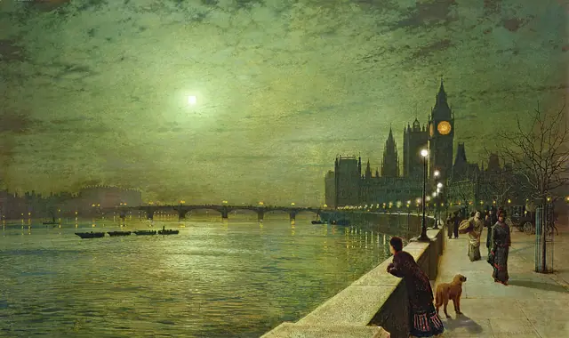
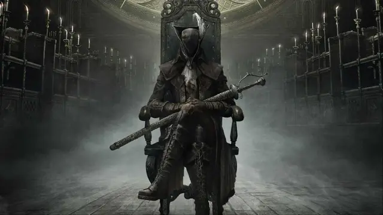
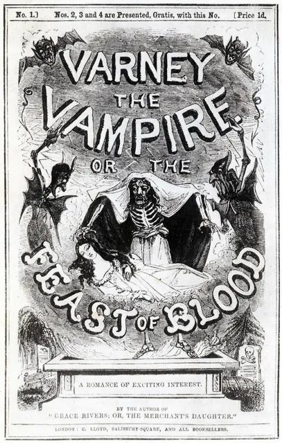
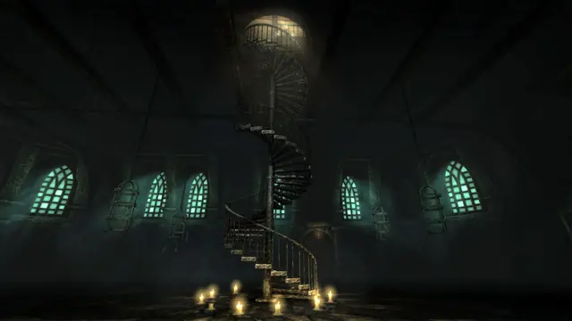
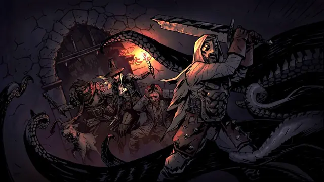
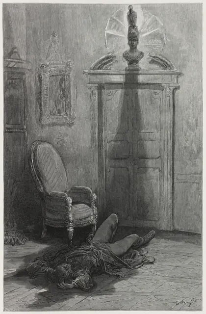
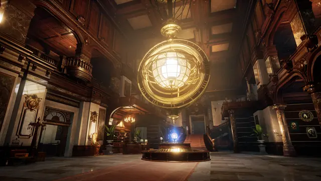
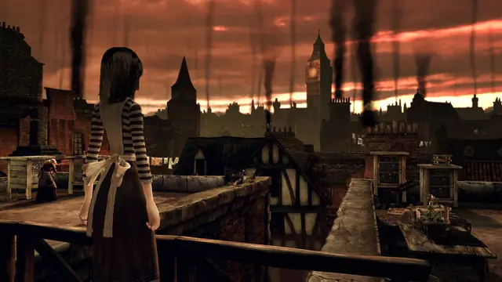
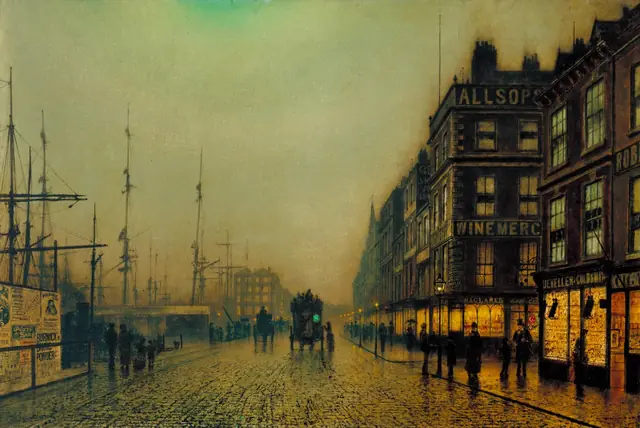
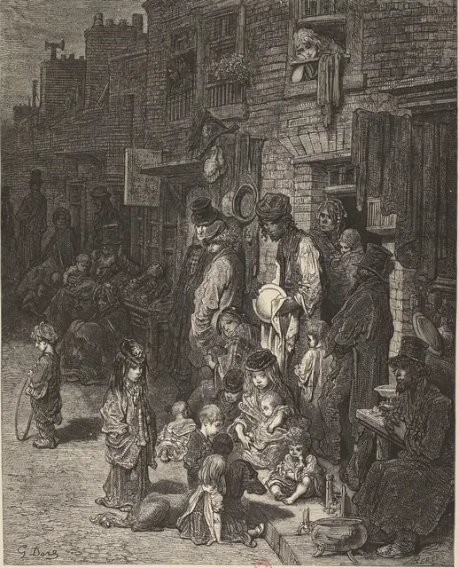
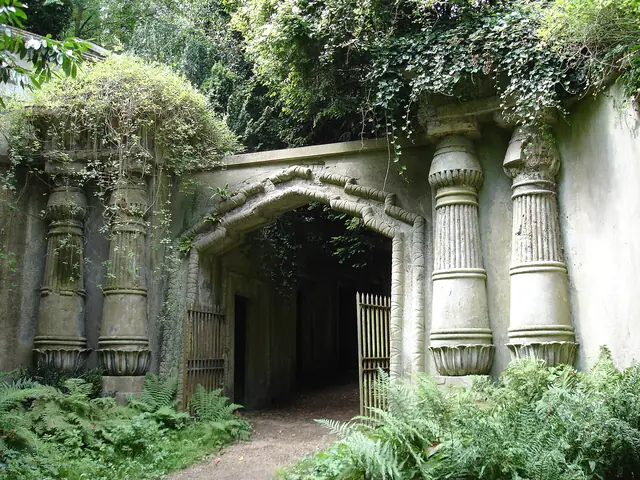
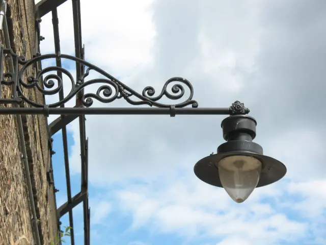
Games
- Bloodborne
Study how Yharnam piles spires onto balustrades, arches and buttresses,11 and how Cainhurst reproduces sets and props from Coppola's Bram Stoker's Dracula.9
- Amnesia: The Dark Descent
Darkness drains sanity, so lamp oil and tinderboxes become the budget for light.5
- Darkest Dungeon
Black kept for the inks, one dominant hue per dungeon, and Wayne June's narration, overwrought without descending into camp.16
- Lies of P
Director Choi Ji-won took the romance of the Belle Époque and made it darker: "Beautiful but creepy is our slogan."22
- Sunless Sea
Study how much dread it carries in writing and 2D art.
- Layers of Fear
Study its wallpaper, panelling and interior decay.
Film, art and more
- London: A Pilgrimage
Doré's wood-engraved London, with Blanchard Jerrold's text: real places, with serious exaggeration on show.8
- John Atkinson Grimshaw
Moonlight painted together with the city's new artificial light,12 down to blue reflections in moonlit puddles.13
- Penny dreadful
The source of this page's serial dress: weekly numbers led by a black-and-white illustration.7
- Dracula
Stoker's novel is as full of typewriters, shorthand and recording machines as it is of vampires.4
- From Hell
Study Eddie Campbell's scratchy pen line for Victorian London at its worst.
- Crimson Peak
A visual parallel in colour: saturated reds against soot.
Sources
- 1Gothic fiction in the Victorian fin de siècle: mutating bodies and disturbed minds
- 2Why is London called the Big Smoke?
- 3Gaslight Romance
- 4Gothic motifs
- 5Game Design Deep Dive: Amnesia's 'Sanity Meter'
- 6How gas lamps illuminated London
- 7Penny dreadfuls
- 8Gustave Doré’s London pilgrimage
- 9Curse the Fiends, Their Children, Too: Cultural Heritage and Subversion of Fictional Tropes in Bloodborne
- 10There are Guns, But From Software’s Bloodborne Won’t Be a Shooter
- 11Understanding the sublime architecture of Bloodborne
- 12Exhibition sheds new light on renowned Leeds artist John Atkinson Grimshaw
- 13Melancholic visions
- 14Yharnam's Street
- 15Gothic Revival
- 16The Gothic Sensibilities of Darkest Dungeon
- 17Volumetric Fog
- 18Water drop 3b – Physically based wet surfaces
- 19Real-time hatching
- 20Road to the IGF: Red Hook Studios' Darkest Dungeon
- 21Song Stories: Camille Saint-Saëns and “Danse macabre”
- 22Lies of P has one cool boss at the center of the story that’s "not just another Soulslike monster"